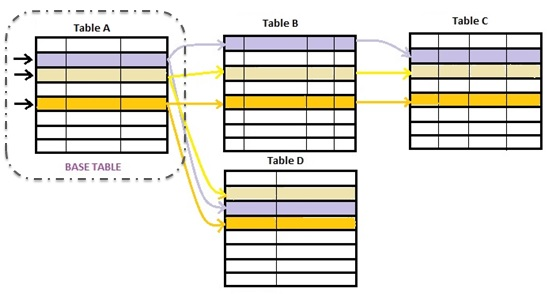

Aggregate Formulas allow defining several types of calculations or searches, involving many records of a table (and its associated by means of the extended table).  They are: For instance, having the following transaction:
FlightInstance { //transaction name
FlightInstanceId*
FlightInstanceDate
FlightInstanceNumberOfPassengers
FlightNumber
FlightDescription
Seat { //transaction level name for storing the passengers of a flight
PassengerId*
PassengerName
FlightInstancePassengerSeatNumber}
inside a procedure we could write: &NumberOfPassengers = Count( FlightInstancePassengerSeatNumber, FlightInstanceDate = &importantDate and PassengerType = 'Premium') Count all the records of the FLIGHTINSTANCESEAT table (table A in diagram) whose related FlighInstanceDate in FLIGHTINSTANCE table (table B in diagram) is equal to the value of the &importantDate local variable and whose related passenger in PASSENGER table (table D in diagram) is of 'Premium' type. Thus, we will obtain the total quantity of seats stored for &importantDate for premium passengers. Aggregate formulas can be either global (assigned to attributes at transaction structure level, indicating those attributes always assume the result of a calculation) or local (or inline, assigned to attributes or variables, elements of Data Providers, SDTs, etc., or being part of conditions that are evaluated in runtime). That is: Aggregate Global Formula: <attribute> = <aggregateConditionalFormula> The main difference between global and inline, is the triggering condition (in inline is not part of the formula definition), and that in global, user variables could not be involved. Meanwhile a Horizontal formula needs a context to be evaluated, an aggregate not neccesarily, as in the previous example. There, for the formula be evaluated the only data needed is the &importantDate user variable. However, although not necessary, if a contextual table exists, it will cause certain inferences, as we will see below by means of some examples. General syntax scheme<agregateConditionalFormula>::= <aggregateFormulaName>( <aggregateExpression>, <aggregateCondition>, <defaultValue> [, <returnedAttributeValue>] ) [ if <triggeringCondition> ] <agregateUnconditionalFormula>::= <aggregateFormulaName>( <aggregateExpression>, <aggregateCondition>, <defaultValue> [, <returnedAttributeValue>] ) where: <aggregateFormulaName>::= {Find | Max | Min | Sum | Count | Average} <aggregateExpression> Is the expression that will be searched for, maximized, minimized, added or averaged, among the records fulfilling the <aggregateCondition>. It may contain attributes (even formula attributes), constants and variables (user variables are allowed only in inline formulas). For Count case only, its value is not an Expression but an attribute. For Sum and Average, the result of <aggregateExpression> must be a numerical value. <aggregateCondition> Is a combination of a search condition with a Data Selector invocation. Both parts are optional: [<SearchCondition>] [USING <DataSelector> '(' <Parameter>1, <Parameter>2, <Parameter>n ')']] <SearchCondition> Is the condition that records must verify to be considered in the aggregation. It may contain attributes, constants and variables (user variables are allowed only in inline formulas, GeneXus standard variables in global formulas and inline formulas). <defaultValue> Is the returned value when no records match the <aggregateCondition>. It is a constant and it is optional. <returnedAttributeValue> Only for Max and Min formulas. Attribute whose value is returned by the formula when it finds records that fulfill the <aggregateCondition> and after maximizing/minimizing the <aggregateExpression>. <triggeringCondition> Is the condition that determines if the formula must be triggered or not. It is optional. The only attributes allowed are those belonging to the contextual table (that the formula attribute would belong to if it were stored) and its extended. ExampleCount( FlightInstancePassengerSeatNumber, FlightInstanceDate >= &dateFrom and PassengerType = "Premium") It counts only those records for what InvoiceDate >= &dateFrom and the related passenger record has the "Premium" type. Contextual tableDepending on the context the formula is used, GeneXus will add automatically filters by equality for the attributes that belonging to the formula navigated table (and its extended), are already instantiated in the context. For example, we could have a procedure that needs to know at the begining if there already are more than 100 seats assigned to 'premium' passengers in the corresponding table: &success = Count( FlightInstancePassengerSeatNumber, FlightInstanceDate >= &dateFrom and PassengerType = "Premium") > 100 Here there is not a context table for the formula. It is triggered isolated, counting all the records of its base table, FlightInstanceSeat, matching the conditions. It will count all the 'premium' passengers for all the flight instances from &dateFrom. On the other hand, if the above code were inside a for each command, such as:
for each FlightInstance
where Count( FlightInstancePassengerSeatNumber, FlightInstanceDate >= &dateFrom and PassengerType = 'Premium') > 100
print flightInstanceInfo //FlightInstanceId, FlightInstanceDate
endfor
The formula does have a context: the FlightInstance table (base table of the For each). Thus, not all the 'premium' passenger seats were going to be counted, but only those corresponding to each FlightInstance record considered in each "for each" iteration. So, only the flights with more than one hundred 'premium' passengers from &dateFrom date will be printed in output. Each time the formula is evaluated it already has an instantiated flight instance (FlightInstanceId). This means GeneXus will also apply the following filter for the records considered in FLIGHTINSTANCESEAT table: FLIGHTINSTANCESEAT.FlightInstanceId = FLIGHTINSTANCE.FlightInstanceId What happens when the formula base table is the same than the context one?In the following example we want to print for each invoice date, the total sum of all the invoices with that invoice date: for each Unique InvoiceDate &total = Sum(InvoiceTotal) print totalbydate //InvoiceDate, &total endfor Here, as the Sum base table is Invoice, the same than the for each base table, and there is a Unique Clause, then GeneXus will group the information by InvoiceDate, either in the for each, or in the Sum calculation. In other words, the Sum formula will have an implicit condition by equality by the InvoiceDate attribute, that will be considered given. Note: If there wasn't unique clause, as the only attribute inside the for each body is InvoiceDate (InvoiceTotal is inside the sum formula) the bahavior would be the same. Why the context is meaningful?Because it will affect the calculation result, allowing to add filtering conditions to the data considered, as well as another attributes (those known by context). Thus, if a context table exists, it will cause not all the records the formula explicitly states to be considered, but only those also matching implicit conditions arising from that context. When this happens, the developer is allowed to include attributes of that contextual table (and its extended) into the formula definition. Contrary to what happens with horizontal formulas, aggregation ones are not involved at all in determining the context base table. In other words, its attributes are only involved in determining the formula base table itself. |